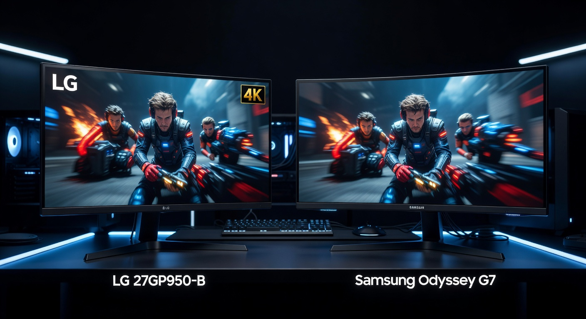

LG 27GP950-B vs Samsung Odyssey G7
4K at 144Hz or 1440p at 240Hz? Two very different answers to "what's the best high-end gaming monitor" — and which one is right depends entirely on how you play.

LG 27GP950-B
4K Nano IPS, DisplayHDR 600, 98% DCI-P3, dual HDMI 2.1. The premium choice for console gamers and AAA single-player titles where every pixel counts.
Samsung Odyssey G7 27"
240Hz VA QLED, 2500:1 contrast, 1000R curve, $150 less. The high-frame-rate choice for competitive players who want depth, curve, and speed over raw resolution.
Full Spec Comparison
| Spec | LG 27GP950-B | Samsung Odyssey G7 27" |
|---|---|---|
| Price | ~$699.99 | ~$549.99 |
| Panel | Nano IPS | VA (QLED) |
| Resolution | 3840×2160 (4K UHD) | 2560×1440 (QHD) |
| Refresh Rate | 144Hz (OC to 160Hz) | 240Hz |
| Response Time | 1ms GtG | 1ms GtG |
| HDR | DisplayHDR 600 (600 nits peak) | DisplayHDR 400 (400 nits peak) |
| Color Gamut | 98% DCI-P3 | 95% DCI-P3 |
| Contrast Ratio | 1000:1 | 2500:1 |
| Brightness (typ.) | 400 nits | 350 nits |
| Curve | Flat | 1000R |
| Adaptive Sync | G-Sync Compatible, FreeSync Premium | G-Sync Compatible, FreeSync Premium Pro |
| HDMI | 2× HDMI 2.1 | 1× HDMI 2.1 |
| DisplayPort | 1× DP 1.4 | 2× DP 1.4 |
| Amazon ASIN | B093Z5Q8MT | B09D8W5W7V |
Category Breakdown
🔍 Resolution & Sharpness
This is the most fundamental difference. 4K (3840×2160) has nearly 4× the pixel count of 1080p and roughly 1.8× that of 1440p. At 27 inches, both resolutions look great, but 4K is noticeably crisper — textures in open-world games, UI elements, and text all benefit. The cost is GPU demand: you need an RTX 4080 or equivalent to push 4K at 100+ fps in demanding titles. At 1440p, a mid-tier GPU like an RTX 4070 handles most games at 165–200+ fps with ease. If you're on PS5 or Xbox Series X and want 4K 120Hz, the LG is the clear choice with its dual HDMI 2.1 ports. For pure PC gaming where GPU budget matters, 1440p gives you more frames for less money.
⚡ Refresh Rate & Competitive Performance
The Odyssey G7's 240Hz vs the LG's 144Hz is a legitimate competitive advantage in fast-paced games. At 240Hz you're rendering up to 240 frames per second, which means motion is visibly smoother and target tracking easier in FPS games. The difference between 144Hz and 240Hz is perceptible — especially for players coming from 165Hz who've developed sensitivity to frame-to-frame smoothness. Both share 1ms GtG response time, so pixel transitions are equally fast. The LG can overclock to 160Hz, which narrows the gap slightly, but 240Hz is still 50% higher. For competitive esports or ranked FPS, the G7's refresh rate is a meaningful edge.
🎨 Color & HDR
LG's Nano IPS panel wins on color accuracy and HDR quality. DisplayHDR 600 at 600 nits peak is a significant step above Samsung's DisplayHDR 400 at 400 nits — HDR content (supported games, HDR10 video) looks genuinely brighter and more dynamic on the LG. The 98% DCI-P3 coverage also edges out Samsung's 95%, producing slightly more saturated, accurate colors. However, Samsung's VA QLED counters with a 2500:1 contrast ratio vs LG's 1000:1 — deeper blacks mean the G7's dark scenes look more dramatic even without HDR. IPS glow (slight light bleed in dark corners) is visible on the LG in very dark environments. The choice depends on what you value: HDR peak brightness and accuracy (LG) or deep native contrast and shadow detail (Samsung).
🌀 Immersion & Form Factor
The Samsung's 1000R curvature is aggressive — the tightest curve commercially available, matching the natural curvature of the human eye according to Samsung's research. In practice, it creates a genuinely immersive wraparound effect in racing games, open-world titles, and first-person games. It's polarizing: some love the immersion, others find it distorting for productivity or non-gaming use. The LG is flat — universally accepted for all use cases, from gaming to spreadsheets to photo editing. No distortion, no curve preference required.
🔌 Connectivity & Console Compatibility
The LG's dual HDMI 2.1 ports are a major advantage for console setups. You can run a PS5 and Xbox Series X simultaneously at 4K 120Hz without swapping cables. The Samsung has only one HDMI 2.1, so multi-console households need a switch or manual cable changes. The Samsung compensates with two DisplayPort 1.4 outputs for PC multi-GPU or daisy-chaining flexibility. Both support FreeSync and G-Sync Compatible for tear-free gaming. For pure PC gaming, the connectivity difference is minimal. For console + PC setups, LG's dual HDMI 2.1 is a genuine quality-of-life win.
💰 Value & Price
The G7 at $549.99 is $150 less than the LG at $699.99. That gap is meaningful — it's enough for a budget gaming mouse or headset. The G7 delivers exceptional competitive gaming specs (240Hz, 1ms, QLED) at a lower price. The LG justifies its premium with 4K resolution, dual HDMI 2.1, and DisplayHDR 600 — features that are genuinely worth more if your use case aligns. Neither is overpriced for what it delivers in its segment.
4 Key Differences
- Resolution: LG's 4K (3840×2160) vs Samsung's 1440p (2560×1440). This is the defining choice — 4K demands a much more powerful GPU to hit high frame rates, but the visual quality leap is real.
- Refresh Rate: Samsung's 240Hz vs LG's 144Hz (160Hz OC). For competitive gaming, the 240Hz advantage is tangible. For single-player / console, 144Hz is more than enough.
- HDR & Contrast: LG wins HDR (DisplayHDR 600, 600 nits peak, 98% DCI-P3). Samsung wins contrast (2500:1 vs 1000:1). Deep blacks vs bright highlights — pick your priority.
- Console Ports: LG has dual HDMI 2.1 for PS5 + Xbox Series X simultaneously. Samsung has only one HDMI 2.1. Multi-console households should note this difference.
Frequently Asked Questions
Can the LG 27GP950-B run at 4K 144Hz on PC?
Yes, but you need DisplayPort 1.4 or HDMI 2.1 to achieve 4K 144Hz. The LG includes both. You'll also need a powerful GPU — at minimum an RTX 3080 or RX 6800 XT to push 4K at 100+ fps in demanding AAA games. For esports titles (Valorant, CS2, Apex), virtually any modern GPU handles 4K at 144fps easily.
Is the Samsung Odyssey G7 1000R curve too extreme?
It's aggressive. Most users find it immersive for gaming, but it's noticeable on straight lines (like spreadsheets or browser tabs) and can look distorted at very close viewing distances. For a dedicated gaming monitor where you sit 2–3 feet back, the 1000R curve is generally comfortable. If you split monitor time between gaming and productivity work, some users prefer the less aggressive 1500R or flat panels.
Does the Samsung Odyssey G7 have VA ghosting issues?
VA panels traditionally had more ghosting than IPS, but Samsung's response time overdrive on the G7 has largely resolved this in practice. With the right overdrive setting, ghosting is minimal at 240Hz. Some users report minor overshoot artifacts if overdrive is set too high. Out of the box, the G7's motion performance is excellent for a VA panel and competitive with IPS alternatives.
Which monitor is better for PS5 and Xbox Series X?
The LG 27GP950-B is significantly better for console gaming. Dual HDMI 2.1 means you can connect both PS5 and Xbox Series X at the same time, both at 4K 120Hz. The G7's single HDMI 2.1 forces you to choose. At 1440p, the G7 can still run consoles at up to 120Hz via HDMI 2.1 — resolution is just capped at what the console outputs (typically 1080p or 1440p, depending on game).
Is 4K worth it at 27 inches for gaming?
At 27 inches the 4K pixel density (163 PPI) is noticeably sharper than 1440p (109 PPI). Sitting at a normal 2–3 foot viewing distance, the improvement in texture detail and UI sharpness is visible in most games. Whether it's "worth it" depends on your GPU budget — you need high-end hardware to take advantage of the resolution with high frame rates. For console gaming, it's straightforward: both PS5 and Xbox Series X output 4K natively, so a 4K monitor unlocks that capability.
How does the Samsung Odyssey G7 compare to the newer G7 Neo models?
The LS27AG700 (standard G7) uses a VA panel. Samsung also makes the Odyssey Neo G7 which uses a Mini LED backlight for significantly better local dimming and HDR performance. The Neo G7 costs more but substantially improves HDR quality. If HDR is important to you and budget allows, the Neo G7 is worth the step up from the standard G7. The standard G7 reviewed here remains the better value for buyers focused on refresh rate and contrast over HDR quality.